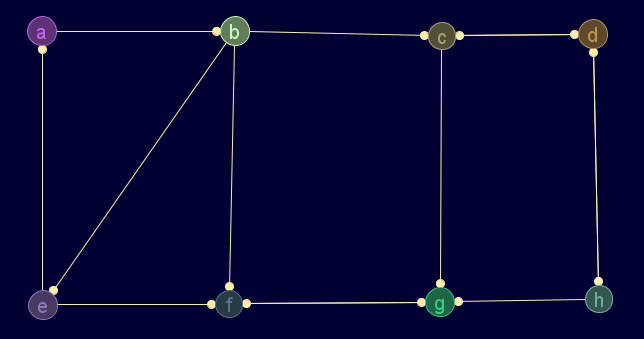

Grafo de 15 nodos:
gr_sucesion(2,3,0,0,1,0,1,4,1,0,1,1,1,2,5)
Salida en JMEScriptGUI con visor de grafos v0.1:

gr_densidad(gr_sucesion(2,3,0,0,1,0,1,4,1,0,1,1,1,2,5))
RealDoble: 0.10476190476190476
Digrafo de 8 nodos:gr_nuevo([[0,1,0,0,0,0,0,0],[0,0,1,0,1,1,0,0],[0,0,0,1,0,0,1,0],[0,0,1,0,0,0,0,1],[1,0,0,0,0,1,0,0],[0,0,0,0,0,0,1,0],[0,0,0,0,0,1,0,0],[0,0,0,1,0,0,1,0]],['a','b','c','d','e','f','g','h'],verdadero)
Salida en JMEScriptGUI con visor de grafos v0.1:

gr_densidad(gr_nuevo([[0,1,0,0,0,0,0,0],[0,0,1,0,1,1,0,0],[0,0,0,1,0,0,1,0],[0,0,1,0,0,0,0,1],[1,0,0,0,0,1,0,0],[0,0,0,0,0,0,1,0],[0,0,0,0,0,1,0,0],[0,0,0,1,0,0,1,0]],['a','b','c','d','e','f','g','h'],verdadero))
RealDoble: 0.25
Grafo completo:gr_densidad(gr_nuevo(const(const(1,10),10)-mat1(10),falso))
RealDoble: 1
Grafo vacío:gr_densidad(gr_nuevo(0*mat1(10),falso))
RealDoble: 0